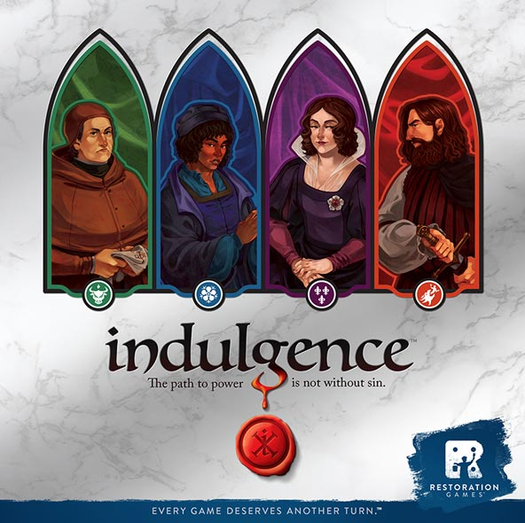
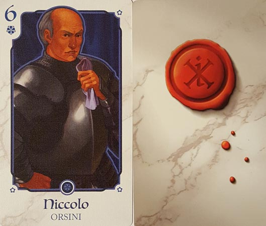
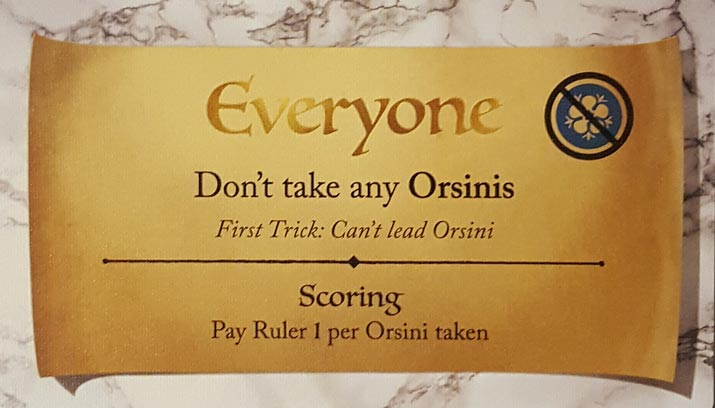
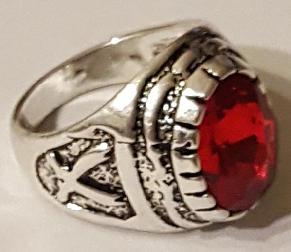
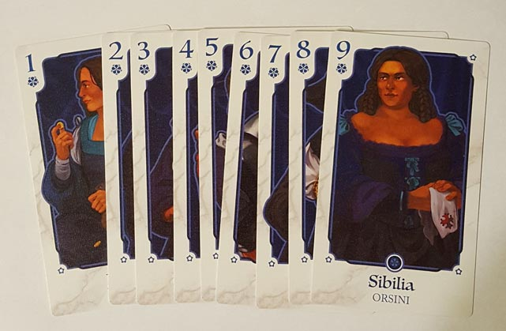
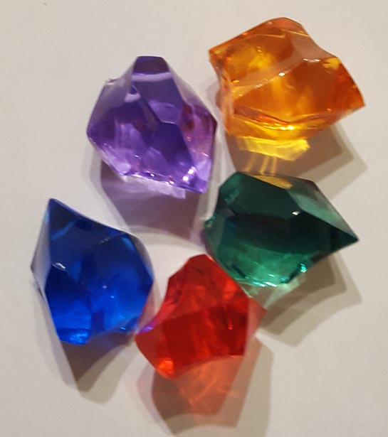

In this Indulgence review, we dissect the trick-taking card game from Restoration Games. Reimplementing Jerry D’Arcey’s Dragonmaster, Rob Daviau and Justin D. Jacobson have created a satisfying game of trick-taking that’s set during the Italian Renaissance. The ruler is passing down edicts that we want to disobey, but doing so is a sin. Then again, sometimes it feels good to sin. For more, read on below.

D reviews Indulgence

(Author’s note: this review is meant to accompany our gameplay video and will not go in-depth on the game’s rules. If you’re interested in learning how the game is played, please watch the video. It’s not bad.)
Indulgence is sort of an odd game to try and review. For starters, it’s just a trick-taking game. Do you like trick-taking games? If so, you’re probably going to like Indulgence. I like trick-taking games and I like Indulgence. Furthermore, it’s not an entirely original release. It’s actually a restoration of Dragonmaster, having traded that game’s fantasy themes for a Renaissance Italy setting. Dragonmaster itself was an update of Coup d’Etat, which itself was a variation of Barbu. Knowing all that, I’m going to merely focus on the bits of the game that are unique to this version.
For starters, the production quality is very good. The cards are all oversized, with the playing cards featuring nice art depicting the various members of the four houses that make up the suits. The coins and edicts cover are also good, made of surprisingly heavy cardboard that, combined with their silver color, actually made me question for a moment if they were metallic in some way. The standout components, however, are the gems and the indulgence ring. The gems, while plastic, are eye-catching and a fun alternative to your typical board game money. The ring actually is made from metal and is functional if you’re assembling some bizarre board game-themed outfit, but it’s mostly a nice inclusion that really gives you a sense of the power that it’s supposed to wield. Overall, it’s an impressive package.
In terms of gameplay mechanics that are specific to Indulgence, the edicts are certainly most prominent. I have some mixed feelings on this part of the game. The edicts certainly add intrigue not always found in trick-taking games, and choosing which one to play and whether or not you should sin definitely requires a lot of strategic decision-making, which is something I always value. At the same time, I do wish that there was a bit more variety to them. Most revolve around not taking any cards or the last card of a certain house, which is fine, albeit a little repetitive. These are also typically the easiest edicts to successfully sin with. A bigger issue is that the edicts seem to dominate the game in a way that’s occasionally disappointing. For example, in many instances an edict’s criteria can be met before all of the tricks have been played. There are no benefits to trying to win further tricks or even to play out the remainder of the hand when this happens. If there were ways to earn florins separate from the edicts, this would make things more consistently interesting, especially for players who have no stakes in the edict or sin in play.
 The
game is still fun though, and the edicts definitely do an effective job
of manufacturing tension, especially when there’s a sinner. Being the
sinner is stressful, but successfully reaching your goals is immensely
satisfying. And working against a sinner with your fellow opponents
leads to fun moments of strategy and pressing-your-luck. To sum up, Indulgence
isn’t my favorite trick-taking game ever, but it’s a good time and I’m
sure I’ll come back to it. I definitely recommend it to fans of the
genre.
The
game is still fun though, and the edicts definitely do an effective job
of manufacturing tension, especially when there’s a sinner. Being the
sinner is stressful, but successfully reaching your goals is immensely
satisfying. And working against a sinner with your fellow opponents
leads to fun moments of strategy and pressing-your-luck. To sum up, Indulgence
isn’t my favorite trick-taking game ever, but it’s a good time and I’m
sure I’ll come back to it. I definitely recommend it to fans of the
genre.
D’s Rating: Three and One-Half Stars out of Five.
Will reviews Indulgence
 Indulgence is an updated and restored version of the 1981 game, Dragonmaster,
which itself was a reimagined version of another game. In other words,
Indulgence has a lot of heritage and therefore, a lot to live up to.
Now, I don’t know anything about Dragonmaster or its predecessors, so I can’t speak to how well Indulgence improves on those games. However, I can speak to how well Indulgence
plays, and I got to say, it’s really entertaining. Sure, it’s a shallow
trick-taking game that’s somewhat limited in its scope, but for what it
is, it achieves a lot.
Indulgence is an updated and restored version of the 1981 game, Dragonmaster,
which itself was a reimagined version of another game. In other words,
Indulgence has a lot of heritage and therefore, a lot to live up to.
Now, I don’t know anything about Dragonmaster or its predecessors, so I can’t speak to how well Indulgence improves on those games. However, I can speak to how well Indulgence
plays, and I got to say, it’s really entertaining. Sure, it’s a shallow
trick-taking game that’s somewhat limited in its scope, but for what it
is, it achieves a lot.
This game comes with a ring, and I’m not talking about some basic wedding band; this is a “kiss the ring” kind of ring. I don’t know why I’m so impressed by it. Maybe it’s the fact that the ring feels surprisingly well made, or maybe I just like the thought of games including higher end components like this. In all fairness, all of the components included in Indulgence’s box are on the higher end, except for the cardboard coins, which I suppose could’ve been metal. I also like the artwork. I definitely don’t love it, but I would say that it meets the minimum requirements for art in contemporary tabletop games. As for the history that inspired this game, I’m not sure it’ll be that meaningful for most people. I think it’s safe to say that the majority of folks, at least Americans, know next to nothing about the noble families of the Italian Renaissance. On the other hand, I found the history to be cool, so maybe I’m off-base here.
Once we got to playing, I quickly understood why the Indulgence line of games has been around for as long it has. This game is just fun, even if it lacks a special hook that a lot of similar games have. Ever since I played games of Oh Pshaw with my grandpa, I’ve been a sucker for trick-taking games. I love trumping someone’s perfect stack and stealing it from them, and I can wholeheartedly state that that experience is part of Indulgence. Unfortunately, throwing down a trump card is not always the goal in this game. In fact, players are usually targeting or avoiding specific cards and because of this, most tricks don’t actually matter all that much, if at all. Why?
Well, Indulgence features special cards called “Edicts”, and these edicts affect how players strategize. At the beginning of the round, an edict is selected by the lead player that determines which cards the players will be penalized for taking. It also determines how many florins (in-game currency & also victory points) will go to the lead player (called the Ruler) if one of those forbidden cards is taken by one of the other players. This adds some color to the base trick-taking mechanics, but it’s not actually that compelling. And then the game presents its most interesting mechanic: sinning. Every edict card has a flipside that offers the players an inverse option, the sin. So if the goal of the edict is to avoid taking any Borgia cards, then the sin option would be to take every Borgia. Sinning will earn the sinner a lot more florins at the end of a round, but they could also lose more if they fail. This mechanic suits this game well and definitely allows players to mount a comeback if they need the money, but it’s also noticeably flawed.
For one, completing a sin shouldn’t be easy, and yet, I’m not sure if I’ve seen someone fail after they chose to sin. At the end of the day, someone will always be dealt a hand that’s well-suited towards any edict and/or sin, so inevitably, someone will sin and unless they really mess up, they’ll succeed. Since the Ruler cannot sin and changes every round, this does mitigate the runaway leader problems of the past games. However in our games, we did notice that someone could still run away with the lead if they were the last to rule and got lucky with their cards. Another problem with sinning is that only the sinner or Ruler stands to benefit from it. This makes sense throughout most of the game, but towards the end, it’ll mean that a couple players might be left out and thus afforded no opportunity to earn the points they need to win. The final round of any game should be white-knuckled intensity for all players, but games of Indulgence often end with a whimper – it’s too anticlimactic.
Despite some of the negatives surrounding Indulgence, I still feel that it’s a solid game that I’d like to come back to. The trick-taking mechanics are truly enjoyable, even if the edict cards muddle the importance of certain tricks. And yes, sinning happens too often and is a bit too easy (at least in 3-player games), but that mechanic does allow players to mount comebacks. As for the components, they’re as good as it gets for the most part, and I didn’t even mention the colorful gems that come with the game. I should also note – there are “Expert” rules that add even more to consider in regards to gameplay, and those rules might remedy some of the problems I mentioned earlier. All in all, Indulgence was not a game designed to blow people away with gaudy artwork and complex gameplay. Instead, it was designed to pay homage to its heritage and improve its predecessors’ antiquated mechanics, and I think it accomplished that.
I give Indulgence a: B
Indulgence Review – Board Crazy’s Ratings
Leave a Reply
You must be logged in to post a comment.